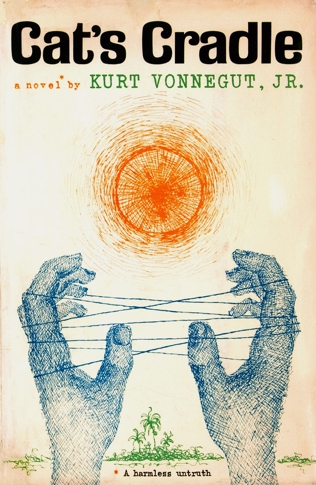
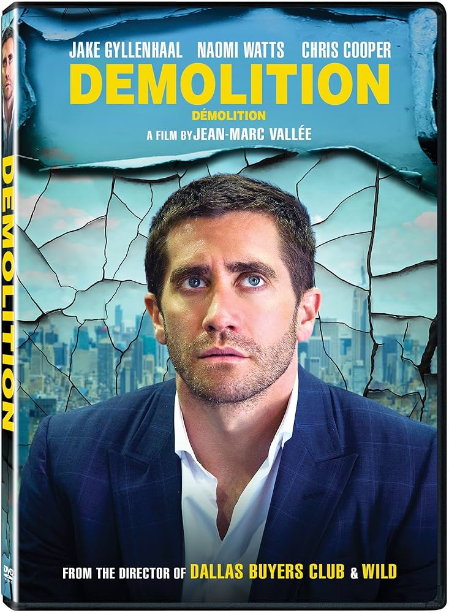
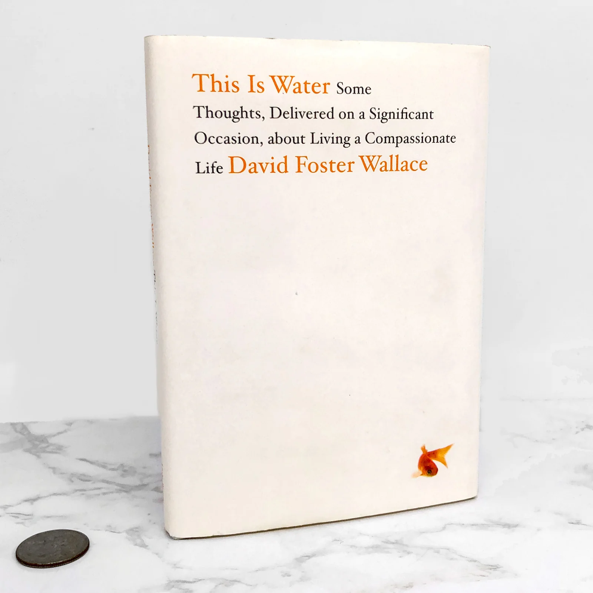
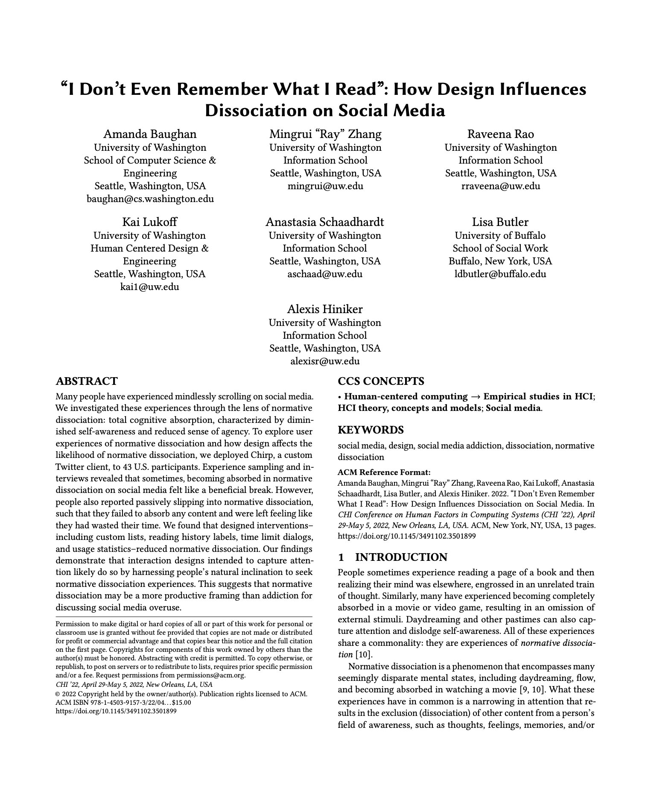
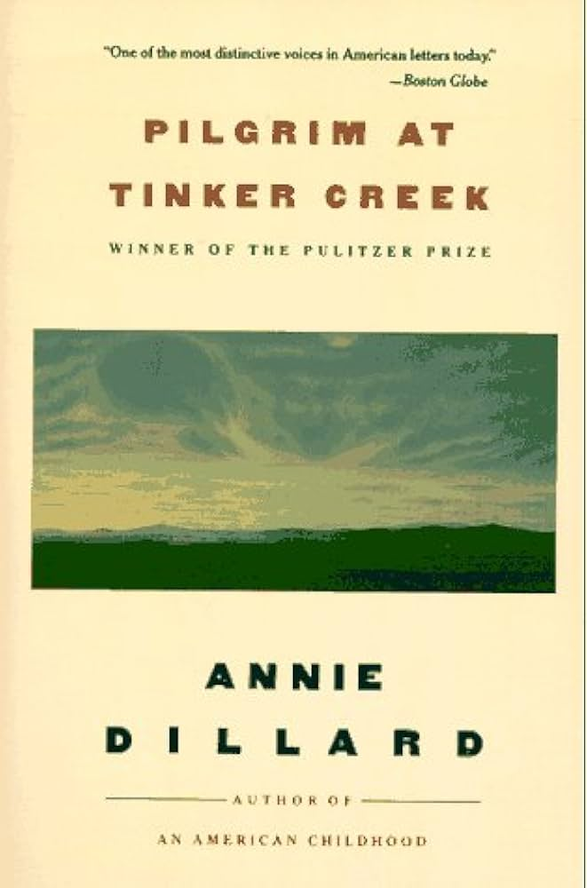
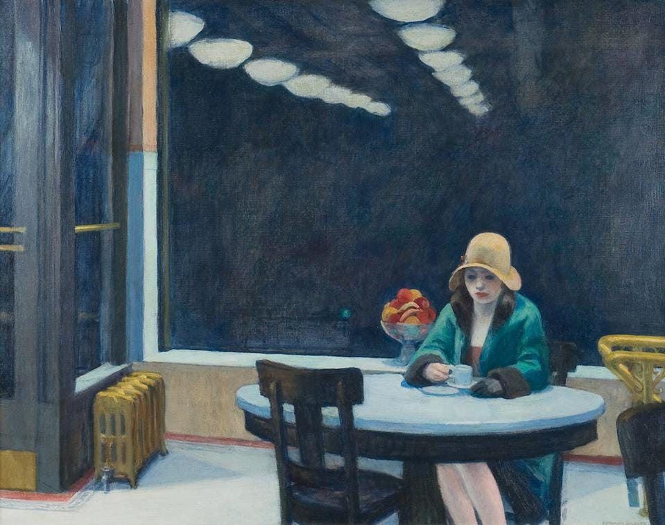
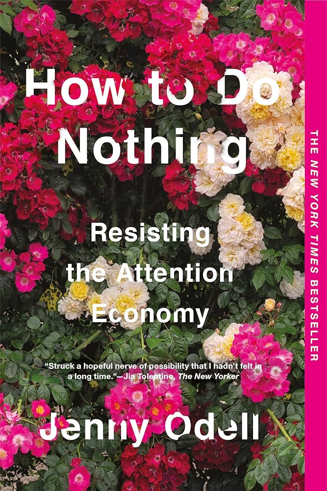

Ten things gathered while learning what it takes to pay attention.
No. 01 · The Literary Anchor
Kurt Vonnegut, Cat's Cradle
Novel, 1963

First edition · 1963
What it is
In 1963, Kurt Vonnegut published his fourth novel, Cat's Cradle. It follows the narrator, Jonah, who ventures through a fictional Caribbean island called San Lorenzo. Prior to ending up on the island, he was attempting to write a book about what important Americans were doing on the day the atomic bomb was dropped on Hiroshima. The people of San Lorenzo follow Vonnegut's invention, the religion of Bokononism, a belief system so unique that it tells you upfront it is all a lie. Vonnegut defines the religion's key word, foma, as "harmless untruths." The novel concludes with an apocalypse that destroys all life, in which Jonah briefly survives. The conclusion emphasizes how humanity causes its own collapse, as careless science led to civilization's end.
What it's doing for the project
Cat's Cradle is the literary anchor of my whole project. Before reading Cat's Cradle, I had a feeling about Demolition that I couldn't put into words. I had the sense that Davis Mitchell wasn't really in his own life, but that whatever had broken him after his wife died had already been broken for years. Vonnegut gave me the word: foma. The story Davis told himself had worked until it stopped. What I found very interesting about Vonnegut is that he isn't trying to get rid of foma. Vonnegut isn't telling the reader to stop pretending; rather, he's saying that pretending is just what it is to be a person. It's not about whether a person must pretend; it's about whether he knows he is pretending. The distinction between the pretense you have chosen and the pretense you have fallen into is what this entire presentation is about. Vonnegut states, "Live by the foma that makes you brave and kind and healthy and happy." I think it perfectly sums it all up because Vonnegut isn't being sarcastic when he says it. I think he really wants you to live your life on the basis of harmless untruths, but at the same time wants you to know they're untruths.
Live by the foma that makes you brave and kind and healthy and happy.
Vonnegut, Cat's Cradle
· · ·
No. 02 · Everydayness
Walker Percy, The Moviegoer
Novel, 1961 · National Book Award, 1962
National Book Award edition
What it is
Walker Percy's first novel, winner of the National Book Award for Fiction in 1962, marked the start of Percy's career as a fiction writer. The Moviegoer is an interesting glimpse into Binx Bolling's adult life. An almost 32-year-old stockbroker in New Orleans, he soon realizes that his daily life of serial secretary dating, selling securities, and going to a lot of movies is not quite right. In naming this feeling, he came up with "everydayness" and "the malaise." Everydayness is a state of being in which you are so used to your day-to-day life that you lose awareness of it. From this emerges the malaise, a persistent feeling of dissatisfaction caused by everydayness.
What it's doing for the project
I decided to include The Moviegoer because Binx Bolling is Davis Mitchell to a tee, except with a different accent and forty years on him. I think both have the same problem: they are technically successful and married/about to be married, but at the same time are totally absent from their own lives. What Percy adds to my project is the language of the "search". Binx states that "The search is what anyone would undertake if he were not sunk in the everydayness of his own life," and then also states, "To become aware of the possibility of the search is to be onto something. Not to be onto something is to be in despair." This represents my project because you can basically be perfectly comfortable and successful and content but at the same time still be in despair as long as you're not aware that you should be looking for something. In fact, this reminds me of the line that "Everydayness is the enemy. No search is possible. Perhaps there was a time when everydayness was not too strong, and one could break its grip by brute strength. Now nothing breaks it, but disaster." I think it's impossible not to see the relation to Demolition here. Davis cannot break out of his everydayness by trying harder or merely being more productive; rather, it's an event that causes it, which is his wife's death. I think disaster is what the universe sometimes hands you when nothing smaller will wake you up, aka trials and tribulations.
Everydayness is the enemy. No search is possible. Now nothing breaks it, but disaster.
Percy, The Moviegoer
· · ·
No. 03 · The Letters as Text
Bryan Sipe, screenplay for Demolition
Drafted 2007

Dir. Jean-Marc Vallée · 2015
What it is
Demolition is a heartbreaking story about an investment banker named Davis Mitchell. Bryan Sipe wrote it, and the opening scene is Davis's wife, Julia, asking him if he fixed their leaky refrigerator, which she's been asking him to do for weeks, and then she dies in a car accident a few moments later. The rest of the screenplay is about Davis continuously writing complaint letters to the vending machine company that took his five dollars at the hospital the night Julia died. Davis gets more and more frustrated and begins taking apart different parts of his life, starting with the fridge, then his work computer, and finally his actual house. The script ends two months later, with Davis donating money to rebuild a carousel dedicated to Julia, then racing a group of kids and finally beating them.
What it's doing for the project
The screenplay matters for my project because it's where Davis' letters to the vending machine live as text rather than in the movie as a voice-over. Davis writes them in a weirdly chatty, specific prose, as if he were writing to and addressing a stranger he assumes will never read his complaint letters. They are relatively small essays by someone who has never written essays in his life. Davis writes to Champion Vending because they don't know him and can't judge him, and also because they most likely wouldn't read it anyway. That setup is exactly what I built into my own presentation, where Davis is texting a stranger who will never reply. The screenplay also reveals a critical moment where Julia asks Davis: "You don't notice anything, Davis. You're in your own little Davis-world. You don't pay attention." I think this sentence is the entire movie, and that everything that happens after the crash is Davis starting to rewire his brain and start paying attention to what he wasn't before, and trying to figure out what he has to pay attention to now, or if it's already too late.
You don't notice anything, Davis. You're in your own little Davis-world. You don't pay attention.
Julia, in Sipe's screenplay for Demolition
· · ·
No. 04 · The Secular Sermon
David Foster Wallace, "This Is Water"
Commencement address, Kenyon College, May 2005

Little, Brown · 2009
What it is
"This is water" is the 2005 Kenyon College graduation speech given by David Foster Wallace in May of 2005, three years before his death. "This Is Water" opens with a parable about two young fish swimming along, and an older fish swimming the other way passes them and says, "Morning, boys. How's the water?" The two young fish swim on. Eventually, one of them turns to the other and says, "What the hell is water?" Wallace sums up the speech's premise: "The most obvious, important realities are often the hardest to see and talk about." The rest of the speech discusses the "default setting," what Wallace terms the reflexive, unconscious egocentrism of adulthood, and argues that the point of education is not acquiring information but rather "learning how to exercise some control over how and what you think." The speech concludes with Wallace expressing almost despair, confessing it's "unimaginably hard to do this, to stay conscious and alive in the adult world day in and day out."
What it's doing for the project
Wallace is the companion closest to Vonnegut on this project. "This Is Water" is the nonfiction version of what Vonnegut is doing with foma, and what Percy is doing with everydayness. The statement "this is water" has the same structure as Davis's "are you there," and Percy's "the search." All of these are things you don't even realize someone is asking you, because the subject of the question is the thing that you are already inside of. I want Wallace in the scrapbook because he provides the nonreligious, nonfiction vocabulary to what Vonnegut does in fiction and what Weil does in theology. It's a testament that four writers, namely Vonnegut, Percy, Wallace, and Weil, all are defining the same phenomena, with entirely different vocabulary. He is also one of the four most insistent that this is not a single moment. It is a practice you fail at over and over again, and one you need to choose over and over again. His line that works the best in my project is actually his most depressing sentence: "the constant gnawing sense of having had, and lost, some infinite thing." That one sentence is, more or less, Demolition. Davis's wife is the infinite thing he had and lost without really noticing.
The constant gnawing sense of having had, and lost, some infinite thing.
Wallace, "This Is Water"
· · ·
No. 05 · The Mystic
Simone Weil, on attention
"Reflections on the Right Use of School Studies with a View to the Love of God," 1942
Simone Weil · c. 1936
What it is
Weil's 1942 essay is an argument about why students should still do their homework even if they're doing a terrible job at it, and a deeply spiritual and profound one at that. In "Reflections on the Right Use of School Studies with a View to the Love of God", the first sentence is: "The key to a Christian conception of studies is the realization that prayer consists of attention." Towards the end of the essay, Weil elaborates on what it means to pay attention. Attention consists of "suspending our thought, leaving it detached, empty, and ready to be penetrated by the object." For Weil, attention is not an ability, and it certainly isn't effort. It's the practice of creating space within ourselves so we can recognize something beyond ourselves.
What it's doing for the project
Weil is where the "faith" element of my faith-and-feeling project becomes explicit. Vonnegut is a humanist with his own invented religion; Percy is a Catholic novelist attempting philosophy through fiction; Wallace is a secularist appropriating religious language as metaphor. Weil is the real deal: a mystic explaining what attention is, an authentic act of prayer, and not a productivity trick. I want to put her in the scrapbook because she is the only one here who wouldn't feel awkward referring to what Davis Mitchell does at the end of Demolition as prayer. She would call it prayer when he is running past the carousel on the boardwalk and finally pursuing something instead of drifting through it: that undivided, attentive being is what she means by prayer, not any asking of a higher power for anything at all. The most useful addition Weil makes to my project, though, comes at the end of her essay, where she ties attention to neighborly love by invoking the legend of the Grail: apparently, the Fisher King cannot be healed until somebody actually asks him, "What are you going through?" She adds, "The love of our neighbor in all its fullness simply means being able to say to him: 'What are you going through?'" It is precisely this line, almost word-for-word, that Davis tries his whole movie to say to his wife when it is already too late.
The love of our neighbor in all its fullness simply means being able to say to him: "What are you going through?"
Weil, "Reflections on the Right Use of School Studies"
· · ·
No. 06 · Scripture
Matthew 26:40
"Could ye not watch with me one hour?"
Christ in the Garden of Gethsemane
What it is
Matthew 26:40 is a passage from the Gospel of Matthew that takes place in the Garden of Gethsemane, the night before Jesus was arrested. He has asked Peter, James, and John to come and pray with him, has announced to them that he is "exceedingly sorrowful, even unto death," and has requested that they "watch with me, and pray". He goes a bit farther to pray, then returns, and finds the disciples asleep. He wakes Peter, and in the KJV: "What, could ye not watch with me one hour?" He then goes off to pray again. He comes back, and they are still asleep. This occurs for a third time. This verse is one of the smaller griefs of the Gospels because it isn't a miracle or a parable; it is just a man on his worst night asking his best friends to stay awake for him for one hour, and they fell asleep.
What it's doing for the project
I wanted to include this passage because this is the oldest iteration of the question my whole project grapples with. Jesus is asking the disciples the same question Julia was asking Davis in the first few minutes of Demolition, the same question Wallace is asking the Kenyon seniors, the same question Vonnegut is asking the reader of Cat's Cradle, the same question Percy is asking through Binx Bolling, the same question Weil is asking through the Grail story: Will you watch? "Could you not watch with me one hour?" is just the prototype. What is most profound to me about this passage, though, is the response of the disciples: they fall asleep, three times, on the worst night of their friend's life. They didn't intend to fail him, and I am convinced they loved him, but they failed him nonetheless. The human response, after all, is to drift, and attention is tiring; bodies get worn out. I included this passage in my scrapbook because it brings Vonnegut, Percy, Wallace, Weil, and Davis Mitchell into a two-thousand-year-old conversation: they are all writing variations on the theme of Gethsemane. The verse gave me permission that I hadn't even realized I wanted: if even the disciples couldn't stay awake on the worst night of their friend's life, then my own failures of attention are not personal flaws. They are the basic conditions of being human.
What, could ye not watch with me one hour?
Matthew 26:40 (KJV)
· · ·
No. 07 · Vernacular
UW "Dissociation on Social Media" Study
Baughan, Hiniker, et al. · CHI 2022

CHI '22 · April 29 – May 5, 2022
What it is
In 2022, Amanda Baughan, Alexis Hiniker, and their co-authors at the University of Washington presented a paper at the CHI human-computer interaction conference, "I Don't Even Remember What I Read: How Design Influences Dissociation on Social Media". To study what users really do (and feel) while scrolling, the authors created their own Twitter clone, Chirp, and used it to monitor use. They collected 8,880 activity logs from 43 users. Their primary conclusion is that what users call "wasting time on Twitter" isn't truly addiction, as is commonly understood. Instead, it's a mild, everyday dissociation, a bit like what you can experience while reading a compelling book and looking up to find that an hour has passed. They term this "normative dissociation", saying "people typically only come to realize they have experienced dissociation in retrospect". What is perhaps most striking is P33, one of the authors' study participants (identified by participant number only), who stated, "It's like that kind of thing, where you don't realize you're doing something. I'm on here reading Twitter, and I don't even remember what I read".
What it's doing for the project
I'm going to put this paper in the scrapbook, because it's the most academic, modern, non-literary take on the question my own project poses. The authors weren't trying to make an argument about presence or attention in any spiritual or philosophical sense. They were conducting UX research on a Twitter-like program, but in doing so, they stumbled upon exactly what Vonnegut, Percy, Wallace, Weil, and Davis Mitchell are all trying to say. The ordinary, everyday experience of having your attention travel places that you don't intentionally direct it. The sentence of the paper that fits nearly every other document in my scrapbook: "Becoming deeply absorbed to the point of normative dissociation by definition means that an individual will have a diminished capacity for self-awareness and sense of volition, the very tools they need to stop their use." This is the foma argument from Cat's Cradle, rephrased in academic language: the foma you're in has rendered you incapable of getting out by its very presence. What I want this paper for, more than any social media post or even any tweet, is to demonstrate that what my project addresses has been scientifically observed and measured. Davis Mitchell (as per the essay I put above) would be the study participant. So would I, probably. So would most of my classmates. This study takes the literary conundrum and makes it empirical, so that I can't read Vonnegut and consider it just a period piece; the problems and solutions Wallace discussed in 2005 are still present today in much deeper waters, as observed by UW researchers in 2022.
Becoming deeply absorbed to the point of normative dissociation by definition means that an individual will have a diminished capacity for self-awareness and sense of volition, the very tools they need to stop their use.
Baughan et al., 2022
· · ·
No. 08 · The Practice
Annie Dillard, Pilgrim at Tinker Creek
Essays, 1974 · Pulitzer Prize, 1975

Pulitzer Prize edition
What it is
Pilgrim at Tinker Creek is the first collection of essays by Annie Dillard, published in 1974; it is a mix of nature writing, theology, and journal entries, and won the Pulitzer Prize the following year. It has no narrative at all. The book is simply Dillard's report of one year spent closely observing a tiny valley in Virginia: a frog being eaten by a giant water bug; a flock of birds turning together in the sky; a maple tree that, one day, is suddenly revealed to her as what she calls "the tree with the lights in it." Her thesis, which reappears in various forms throughout the book, is that looking is not passive. Most of the time, we do not see anything in front of us; doing so takes practiced emptiness, waiting without seizing, and more often than not is a failure. "I cannot cause light; the most I can do is try to put myself in the path of its beam" is one of the best-known lines she ever wrote. Pilgrim is, in its simplest terms, a 400-page proof that paying attention is the only spiritual discipline available to the non-believer, and probably to the believer too.
What it's doing for the project
I have placed Dillard here because, of all the writers I have read for this project, only Dillard takes attention seriously as a practice. It is not a state or a goal or a quality some lucky people possess; it is a discipline at which you fail every day and every morning you must take up again. Vonnegut tells me that I am going to live by certain foma whether I like it or not. Percy tells me that the ordinary is the thing one must oppose. Wallace tells me that my natural inclination is toward unconscious self-centeredness. Weil tells me that unmixed attention is prayer. What Dillard adds to the conversation, and what I needed for this project, is the raw feeling of trying to pay attention from the inside, when that attempt is being made by an ordinary person, not a saint or a martyr, and not in any immediate crisis, and simply trying to be alive. The sentences of Pilgrim at Tinker Creek have given me more of an insight into the practice of attempting to pay attention and failing most of the time than any text I have encountered. Dillard goes for walks. She looks at the same creek. Most of what is taking place is missed by her, but sometimes she happens upon it. This is a narrative of her accidents and all the stretches of quiet non-accident when she is, without knowing it, waiting for the next accident. This is helpful for my project because Davis Mitchell's storyline in Demolition is almost identical. The story is about a man missing his own life and repeatedly doing the same small, compulsive thing: taking apart appliances in one, watching a creek in the other, and being partly rewarded with a glimpse of real insight without having earned it in any expected way.
I cannot cause light; the most I can do is try to put myself in the path of its beam.
Dillard, Pilgrim at Tinker Creek
· · ·
No. 09 · Glass and Coffee
Edward Hopper, Automat
Oil on canvas, 1927 · Des Moines Art Center

Edward Hopper, Automat, 1927. Des Moines Art Center.
What it is
Automat is an oil on canvas painting by Edward Hopper, painted in 1927. It is at the Des Moines Art Center in Iowa. The canvas depicts a woman alone at a small, round table inside an automat: a self-service cafeteria trend that existed in American cities in the early 20th century, where coin-operated glass compartments offered food selections and from which patrons picked up what they bought. Her green overcoat is worn buttoned to the neck. Her hat is yellow; she is wearing one glove, and the other has slipped onto the table next to her coffee. Her gaze is directed down, at the mug; she is contemplating her purchase. Two lines of ceiling light recede toward two lines of reflecting ceiling light, extending through a dark window and ending in a black void. There is no other soul. No menu, no server, no customer bustle, no companion; there is even no glimpse of the glass wall compartments to which the restaurant owes its name. We see, instead, the customer alone with her purchase after it.
What it's doing for the project
I chose Automat as it most visually resembled the vending machine scene from Demolition, which I wanted to complement the film. Ironically, the painting was produced almost ninety years before Demolition. The woman in Hopper's painting is, in an almost structural way, in the same situation as Davis Mitchell. She has chosen and paid for what she wants. The desired object is in front of her. But, despite appearances, she is not moving toward it. Her cup of coffee is full, and she is watching it rather than drinking it. The window behind her, with the two rows of lights disappearing into the dark, works much the same way as the vending machine glass in the film. It creates a barrier to her surrounding world, and yet it is simultaneously a mirror of her interior world. Just as the vending machine sets the world of that scene in Demolition, Hopper's setting in Automat does the same. Automat, like the vending machine, has removed human contact from a transaction. There is no server to see if she is alright or to look at her directly. The space itself is engineered to allow a person to be alone in public, the specific type of alone that my project is focused on. Hopper does not write about foma. He does not write essays about default settings. He just paints a woman who has gone through the motions of buying a cup of coffee and now holds it. Hopper has, however, captured the essence of what my project is also concerned with: a person who is technically present at her own life and, in some other sense, not yet there. The painting is valuable as art because Hopper does not editorialize; the audience does not need to be told what she is feeling. We see her, and the gulf between her and the coffee. That is the gamble I am making in my presentation of the iMessage interface: that the viewer already knows what this feels like. Hopper painted a picture with the same bet in 1927, in oil on canvas, and he was right.
· · ·
No. 10 · The Contemporary Voice
Jenny Odell, How to Do Nothing
Resisting the Attention Economy · 2019

Melville House · 2019
What it is
How to Do Nothing is a book by Bay Area artist and writer Jenny Odell, who also teaches at Stanford. What began as a keynote speech given by Odell at an art-and-technology conference in 2017, just a few months after Trump took office, a period during which she found herself unable to make any new work and began visiting a public rose garden in Oakland nearly every day to sit there, has been expanded into a work that is part memoir, part nature writing, part political argument. Odell's primary contention is that in the attention economy, refusing to be productive is inherently political. Odell is not anti-technology; she is not advising her reader to trash her apps and live in a forest. What she is criticizing is the way that the present digital platforms have trained us to treat our own attention as something that should always be earning us something. She is calling on us to, in her terms, "do nothing," which doesn't really mean doing nothing. It's more a call to redirect your attention away from the metrics and back to the place you actually live, to the people around you, and to the parts of your own life that don't show up well on a screen.
What it's doing for the project
Odell is in because she is the most contemporary voice in my project, and she presents the contemporary version of the argument that everybody else in this scrapbook is making in different terms. Vonnegut called it foma. Percy called it everydayness. Wallace called it a default setting. Weil calls attention itself a kind of prayer. UW researchers called it normative dissociation. Odell calls it the attention economy and articulates what is being taken from us as a result more directly than anyone else: "Solitude, observation, and simple conviviality should be recognized not only as ends in and of themselves, but inalienable rights belonging to anyone lucky enough to be alive." The sentence above is the political expression of what Davis Mitchell figures out by the end of Demolition. Solitude, observation, conviviality: the elements missing from his life, the elements he had to dismantle his entire house just to notice were missing. The utility Odell brings to my scrapbook is that she alone represents someone who treats attention as something that has been stolen from us, not just something we have failed to provide on our own. Wallace says staying conscious is tough. Weil says attention is a discipline. Odell says someone is making money off of your not paying attention and has an interest in keeping it that way. That is the version of the argument that lands hardest in 2026. The Odell line I find most compelling is this one: "patterns of attention, what we choose to notice and what we do not, are how we render reality for ourselves, and thus have a direct bearing on what we feel is possible at any given time." That is as close as anyone in this scrapbook comes to saying aloud what the whole point of my project is. Whatever you attend to is the world you live in. Davis Mitchell lives in one world, and Odell wants us to live in another.
Solitude, observation, and simple conviviality should be recognized not only as ends in and of themselves, but inalienable rights belonging to anyone lucky enough to be alive.
Odell, How to Do Nothing